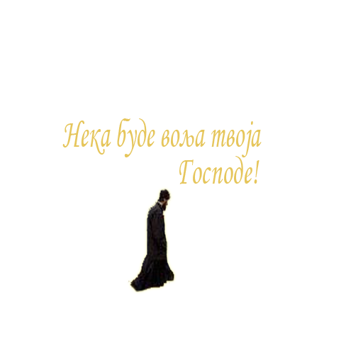

Mолитва светог Филарета
Господе, не знам шта да молим од Тебе. Ти
једини знаш шта је мени потребно. Ти љубиш мене
више него што ја умем љубити себе. Оче, дај слузи
Твоме оно што ја сам и искати не умем. Не усуђујем
се искати ни крст, ни утеху, само стојим пред То
бом: срце је моје отворено Теби. Ти видиш потребе,
које ја не знам: види и поступи са мном по милости
Својој. Порази и исцели, обори и подигни ме; ниш-
таван сам и нем пред светом вољом Твојом и недо-
кучивим за мене судовима Твојим. Приносим себе
на жртву Теби; предајем се Теби. Немам жеља, осим
жеље да испуним вољу Твоју. Научи ме молити се.
Сам у мени моли се. Амин.
Господе дај да мирно примим све што ми доне
се данашњи дан, и да се потпуно предам Твојој све
тој вољи.
Упућуј ме и помажи сваког часа у току овога
дана. Било какве вести да добијем, научи ме да их
примим мирно и с чврстим уверењем да све бива по
Твојој светој вољи. Управљај мојим мислима и осе
ћањима и у свим делима и речима.
Не допусти да у непредвиђеним случајевима за-
боравим да све долази од Тебе. Научи ме да се пра-
вилно односим према својим родитељима и својим
ближњима, да никог не разгневим и ожалостим.
Господе дај ми снаге да поднесем замор данашњега
дана и све што се у току дана догоди. Управљај мо-
јом вољом и научи ме да се молим, да верујем, да се
надам, да трпим, да праштам и волим. Амин.